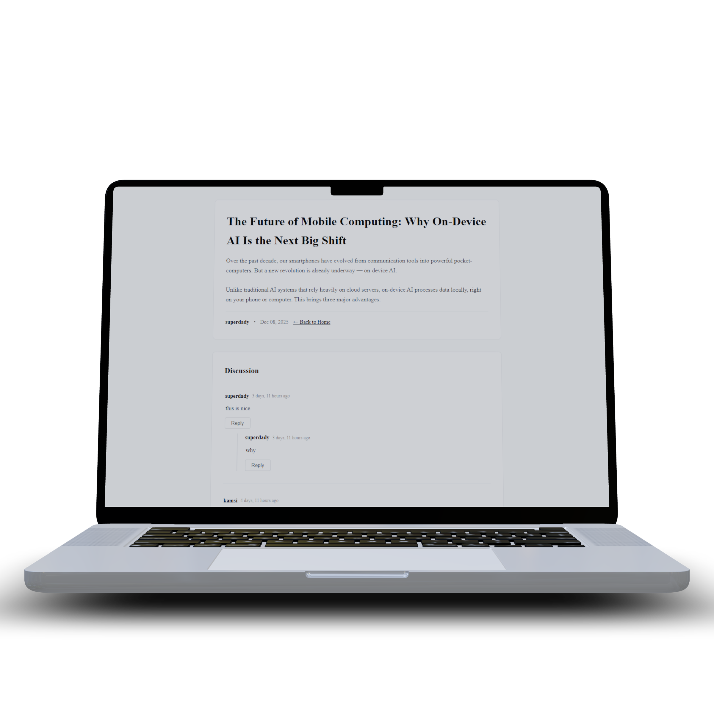

TALK

DEEP
THREADS.
Talk is a modern forum engine designed to facilitate high-quality discussions. Unlike flat social feeds, Talk focuses on nested hierarchy and community moderation, allowing conversations to branch out naturally without losing context.
The architecture prioritizes relational data integrity, ensuring that thousands of nested comments are retrieved with minimal database overhead through optimized recursive queries.
NESTED LOGIC
Advanced recursive threading that allows for infinite depth while maintaining visual clarity and performance.
Global Keyword Search
A high-speed search engine that scans titles and post content to help users find answers instantly.
REAL-TIME
AJAX-driven interactions for seamless posting without page reloads.
USER PROFILES
Dynamic activity dashboards tracking contributions, karma, and thread history.